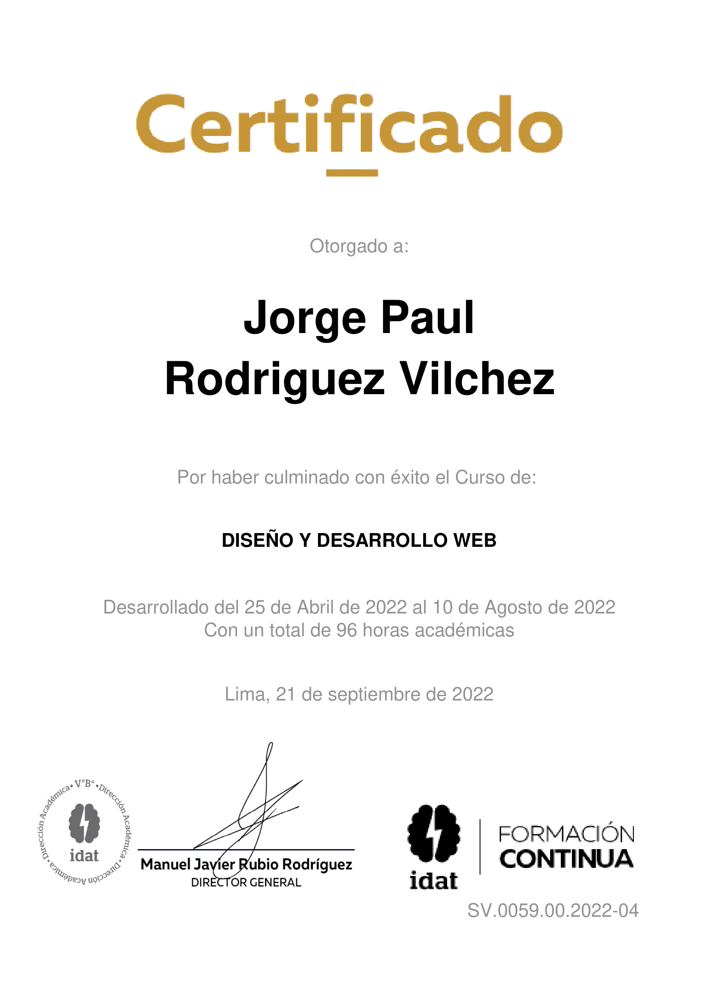

Educación
Estudié en Academlo durante 5 meses en el Bootcam para programador Web Full Stack de forma constante para poder aumentar mis conocimientos y habilidades.
Completamos un curso de 4 meses para diseño y programador web desarrollado en el instituto IDAT  en Lima Perú.
en Lima Perú.
Certificado
Tecnologias
 Html
Html
 Css
Css
 JavaScript
JavaScript
Habilidades Blandas
- Comunicación
- Trabajo en Equipo
- Resolución de Problemas
- Autogestión
- Curiosidad